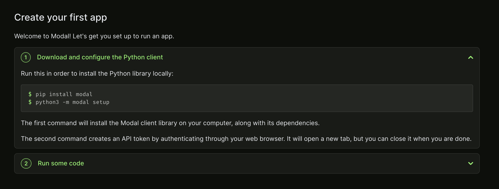
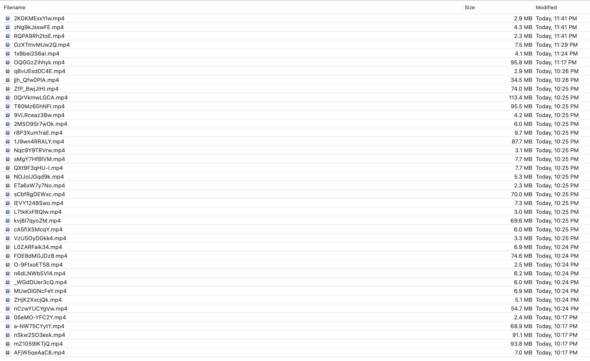
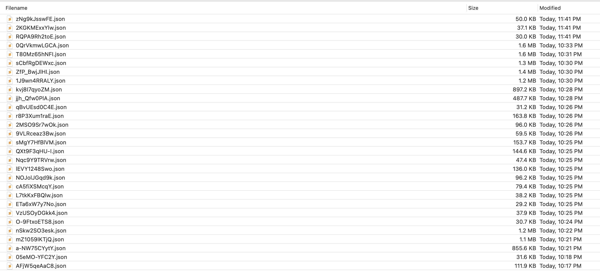
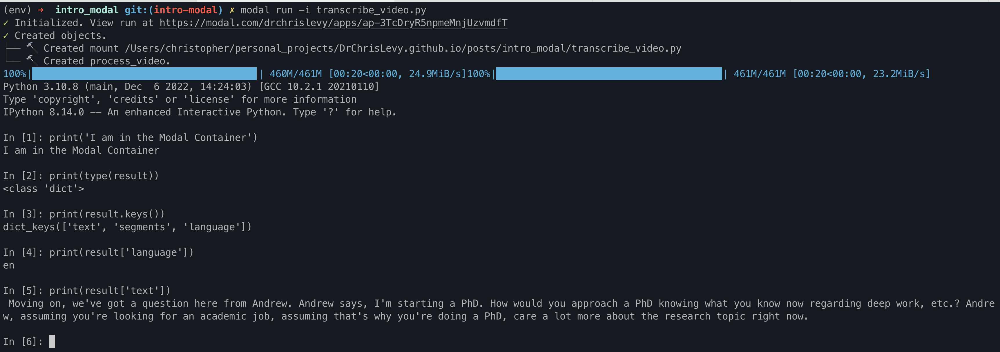
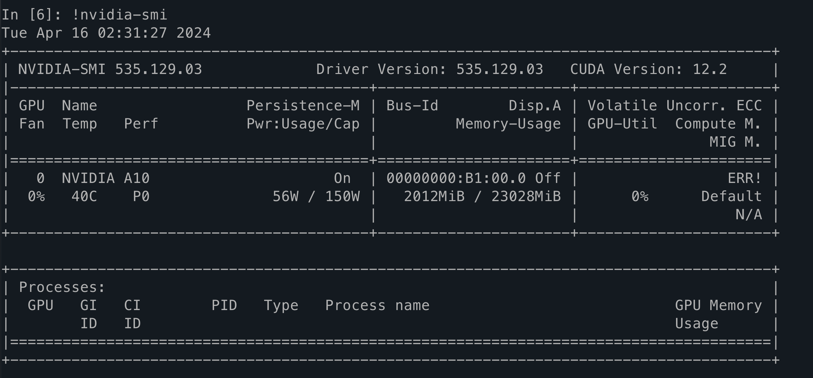
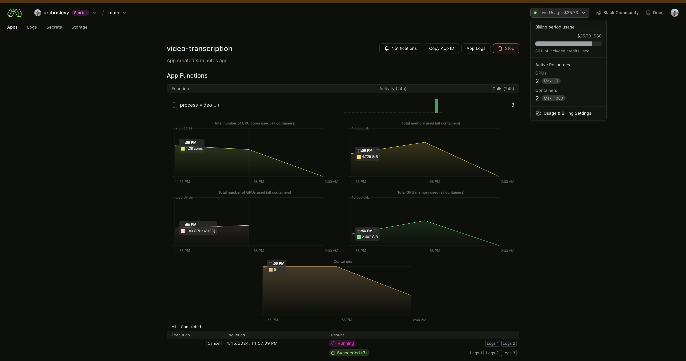

Intro
I have been following Modal for a while but never used it until last week. I recently wrote a blog post on using Axolotl to fine-tune a decoder LLM for the first time. For that work I needed to transcribe some YouTube podcasts with OpenAI Whisper model. I figured it would be a cool use case for Modal and a chance to learn something new.
I’m no stranger to parallel processing with Python. I have used celery extensively with a Redis backend in production for doing all sorts of things, including deployment of ML models. It’s actually given me a good understanding of tasks, queues, concurrency, CPU/MEM usage, Redis, and so on. But I didn’t want to have to deal with all that for this personal project. I didn’t want to think about infrastructure, Kubernetes, helm charts, node groups, ec2 instances, etc. I just wanted to write some Python code and get the job done.
In this post I will describe how I used Modal to accomplish this task. I’m no expert in using Modal because this is the first project I used it on. But I did love every bit of it. Honestly, Modal is amazing. It’s pure magic. I can not wait to use it for my next project.
Setup
First I signed up and logged in via GitHub. Then I simply followed the instructions on screen.

I created a virtual env and installed modal as well as python-dotenv and pytube.
python3 -m venv env
source env/bin/activate
pip install python-dotenv
pip install pytube
pip install modal
python3 -m modal setupTask Description
The Modal docs are amazing, so I’m not going to repeat that here. Just go read the docs and try some of the simple hello world type of examples.
For the task of transcribing a YouTube video with Whisper I want a Python function that will do the following:
- takes a YouTube video
urlas input –>https://www.youtube.com/watch?v=<video_id>. - checks if the url i.e.
<video_id>has already been processed by checking if the transcript json file<video_id>.jsonis already in s3. If so, then exit the function. - save the audio as a mp4 file to s3:
s3://<s3-bucket>/youtube_downloader/audio_files/<video_id>.mp4. - save audio transcript to s3:
s3://<s3-bucket>/youtube_downloader/transcripts/<video_id>.json.
Then I can use the Modal map feature to fan out this function/task in parallel.
Show me the Code
There are various ways to use secrets in Modal. One simple way is through dotenv. I defined some environment variables in a local .env file.
S3_BUCKET=<my-s3-bucket>
S3_PREFIX=youtube_downloader/
AWS_ACCESS_KEY_ID=<my access key>
AWS_SECRET_ACCESS_KEY=<my secret access key>Here is the code in a file transcribe_video.py:
import os
import io
import json
import modal
from dotenv import load_dotenv
load_dotenv()
S3_BUCKET = os.environ["S3_BUCKET"]
S3_PREFIX = os.environ["S3_PREFIX"]
stub = modal.Stub("video-transcription")
image = (
modal.Image.debian_slim(python_version="3.10")
.run_commands("apt-get update", "apt update && apt install ffmpeg -y")
.pip_install(
"openai-whisper",
"pytube",
"boto3",
"python-dotenv",
)
)
def upload_file(filename, s3_filename, bucket_name):
import boto3
client = boto3.client("s3")
headers = {"ACL": "public-read"}
headers["CacheControl"] = "max-age %d" % (3600 * 24 * 365)
client.upload_file(filename, bucket_name, s3_filename, ExtraArgs=headers)
return f"https://{bucket_name}.s3.amazonaws.com/{s3_filename}"
def check_file(filename, bucket_name):
import boto3
from botocore.errorfactory import ClientError
client = boto3.client("s3")
file_exists = True
try:
client.head_object(Bucket=bucket_name, Key=filename)
except ClientError:
file_exists = False
return file_exists
def upload_fileobj(file_object, s3_filename, bucket_name):
import boto3
client = boto3.client("s3")
headers = {"ACL": "public-read"}
headers["CacheControl"] = "max-age %d" % (3600 * 24 * 365)
client.upload_fileobj(file_object, bucket_name, s3_filename, ExtraArgs=headers)
return f"https://{bucket_name}.s3.amazonaws.com/{s3_filename}"
def dict_to_s3(record, s3_filename, bucket_name):
in_mem_file = io.BytesIO()
in_mem_file.write(json.dumps(record, sort_keys=True, indent=4).encode())
in_mem_file.seek(0)
upload_fileobj(in_mem_file, s3_filename, bucket_name)
return f"https://{bucket_name}.s3.amazonaws.com/{s3_filename}"
@stub.function(
image=image,
secrets=[modal.Secret.from_dotenv()],
cpu=2,
memory=1024 * 3,
gpu="A10G",
timeout=600,
)
def process_video(url):
import re
from pytube import YouTube
import whisper
video_id = re.search(r"v=([a-zA-Z0-9_-]{11})", url).group(1)
file_name_audio = f"{video_id}.mp4"
s3_file_name_audio = os.path.join(S3_PREFIX, "audio_files", file_name_audio)
s3_file_name_transcript = os.path.join(S3_PREFIX, "transcripts", f"{video_id}.json")
if check_file(s3_file_name_transcript, S3_BUCKET):
print(f"Already processed {s3_file_name_audio}. Skipping.")
return
yt = YouTube(url)
audio_stream = yt.streams.get_audio_only()
audio_stream.download(filename=file_name_audio)
upload_file(file_name_audio, s3_file_name_audio, S3_BUCKET)
# transcribe video
model = whisper.load_model("small", device="cuda")
audio = whisper.load_audio(file_name_audio)
# audio = whisper.pad_or_trim(audio) # useful for debugging
result = model.transcribe(audio, fp16=True)
# for debugging in ipython shell
# modal.interact()
# import IPython
# IPython.embed()
return dict_to_s3(result, s3_file_name_transcript, S3_BUCKET)
@stub.local_entrypoint()
def main():
from pytube import Playlist
import random
all_urls = set()
for playlist_url in [
"https://www.youtube.com/playlist?list=PL8xK8kBHHUX4NW8GqUsyFhBF_xCnzIdPe",
"https://www.youtube.com/playlist?list=PL8xK8kBHHUX7VsJPqv6OYp71Qj24zcTIr",
"https://www.youtube.com/playlist?list=PL8xK8kBHHUX5X-jGZlltoZOpv5sKXeGVV",
]:
p = Playlist(playlist_url)
for url in p.video_urls:
all_urls.add(url)
urls = random.sample(list(all_urls), 20)
for msg in process_video.map(urls):
print(msg)You can execute it with Modal using modal run transcribe_video.py.
I think there is more optimizations that could be done such as caching the model downloading but I have not looked into it.
Some comments on the code:
- define your own custom container
imageand install whatever you like on it. - for the task function
process_videowe simply decorate it with@stub.functionand we can specify things such as theimage, mem/cpu resources, secrets etc. In this case we can even run it on an A10 GPU for faster inference with Whisper. I increased the timeout because I was transcribing longer videos. - I am using
from pytube import Playlistto list out the video urls in a given YouTube playlist within themainfunction. That logic runs on my local machine. You can add whatever logic you want there, different video urls, etc. The main idea is thatprocess_videotakes the videourlas input. You can increase the sample size inurls = random.sample(list(all_urls), 20)to whatever you like. This code,modal run transcribe_video.py, can be run over and over again and any video that was already transcribed and saved to s3 will be skipped automatically. process_video.map(urls):fans out the tasks and it runs entirely on Modal’s cloud infrastructure. Not locally!
The output is saved to s3.


Jumping into Ipython Shell for Interactive Debugging
You can even jump into the ipython shell on the server at any point in the function logic to debug. That is pretty cool! Just remove the comments:
# for debugging in ipython shell
modal.interact()
import IPython
IPython.embed()I also removed the comment # audio = whisper.pad_or_trim(audio) # useful for debugging during debugging so the transcription was just for 30 seconds and hence the code runs much faster.
Then just run the code in interactive mode with modal run -i transcribe_video.py
I did this several times to check the output of result = model.transcribe(audio, fp16=True). I also debugged the files being saved locally on the image container. It gave the same feeling as developing locally but it was all running in the cloud! I did not have to get ffmpeg and OpenAI Whisper running locally on a GPU or mess around with cuda drivers. It just worked, surprisingly. Here are some screenshots of the interactive ipython shell:


Conclusion
I hope this got you excited to go and try out Modal. They actually give you $30 of compute each month. And the dashboard is great. It can show you detailed logs, resource consumption, and the billing is very transparent (updated in real time).
